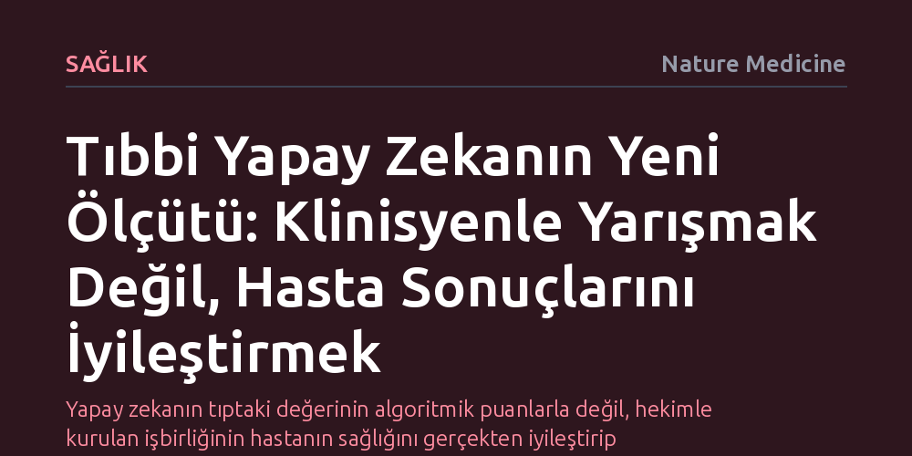

SAGLIK · Nature Medicine · 2026-09-08
Tıbbi yapay zekanın ilk nesli algoritmaların hekimleri yakalayıp yakalayamadığına odaklanırken, yeni neslin başarısı insan ve yapay zekayı birleştiren sistemlerin hasta sonuçlarını doğrudan iyileştirme gücüyle ölçülmelidir. Gerçek klinik denemeler, laboratuvardaki başarı yarışından hasta sağlığına odaklanan ortak çalışma modellerine geçilmesi gerektiğini gösteriyor.
Yapay zekanın tıptaki değerinin algoritmik puanlarla değil, hekimle kurulan işbirliğinin hastanın sağlığını gerçekten iyileştirip iyileştirmediğiyle ölçülmesi gerektiğini gösterir.

Sağlık teknolojilerinde yapay zekanın ilk evresi, geliştirilen algoritmaların uzman hekimlerin tanı başarısını yakalayıp yakalayamayacağı tartışması üzerinden şekillendi. Retrospektif veri setlerinde radyologlardan daha başarılı sonuçlar veren modeller tıp dünyasında geniş yankı uyandırsa da, laboratuvar ortamındaki bu istatistiksel üstünlük hastanelerdeki klinik gerçeklikle birebir örtüşmedi. Bir modelin tekil bir tıbbi görüntüyü hatasız sınıflandırması, bütüncül bir sağlık sistemi içinde hastanın nihai sağ kalımını veya tedavi başarısını doğrudan garanti etmeye yetmiyordu.
Bugün gelinen aşamada ise odak kökten değişiyor. Tıbbi yapay zekanın başarısı artık 'doktorun yerini alıp alamayacağı' sorusuyla değil; özenle kurgulanmış insan-yapay zeka sistemlerinin hastaların sağlığını somut biçimde iyileştirip iyileştirmediğiyle ölçülüyor. İlk nesil geride kalırken, yeni nesil tıbbi yapay zekanın gerçek sınavı algoritmik skorlardan hasta sağlığı sonuçlarına geçebilmektir.
Yapay zeka modelleri genellikle sınırları net çizilmiş, temizlenmiş ve geçmişe dönük veri setleri üzerinde eğitilir. Oysa gerçek sağlık ortamları, arşiv dosyalarının sunduğu steril koşullardan çok farklıdır. Klinisyenler gün boyu yüzlerce tarama incelemekte, yorgunluk, dikkat dağıtıcı etkenler ve zaman baskısı gibi bilişsel zorluklarla mücadele etmektedir. Bir algoritmanın tek başına uzman gibi kararlar üretmesi, pratikte hekimin iş yükünü hafifletmek yerine yanlış pozitif alarmlarla bilişsel yorgunluğu artırabilmektedir.
Bu kopukluğu gidermenin yolu, yapay zekayı hekimin yerine geçecek bir mekanizma olarak değil, uzmanların karar süreçlerini tamamlayan bir ortak olarak tasarlamaktır. Radyoloji alanındaki görsel algı araştırmaları, uzmanların belirli lezyonlara odaklanırken diğer kritik anomalileri gözden kaçırabildiğini göstermektedir. İyi tasarlanmış bir insan-yapay zeka işbirliği, hekimin görsel ve zihinsel dikkat açıklarını kapatırken gereksiz klinik müdahaleleri tetiklemeyecek bir denge kurmayı hedefler.
Tıpta yeni bir ilacın, aşının veya cerrahi yöntemin kabul görmesi için altın standart her zaman randomize kontrollü klinik denemeler olmuştur. Buna karşın birçok tıbbi yapay zeka aracı uzun süre bu katı klinik testlere girmeden ticarileşmeye çalıştı. Meme kanseri taramalarında yapay zekayı gerçek hastalar üzerinde test eden öncü randomize denemeler, başarının sadece algoritmanın matematiksel gücünden değil, klinik iş akışına nasıl entegre edildiğinden kaynaklandığını kanıtladı.
Bir yapay zeka sisteminin klinik değeri; radyoloğun iş yükünü güvenle azaltabilmesi, erken evredeki kanserleri daha yüksek doğrulukla yakalayabilmesi ve taramalar arasındaki dönemde ortaya çıkan tümörleri engelleyebilmesiyle ortaya çıkar. Geleceğin sağlık sistemi, teknolojiyi hekime rakip kılan yaklaşımlar yerine, hekimin sezgisel uzmanlığı ile algoritmanın analiz gücünü harmanlayan tasarımlar üzerinden şekillenecektir.